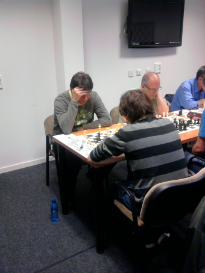
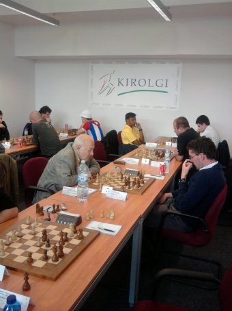

Agustin de Leitza Xake Elkartea |
| » hasiera » elkarteko bazkideak » taldekako txapelketa » azken txapelketak » loturak |
2011ko Donostiako Irekia2011-04-23 Urtero bezala, aurten ere Espinek Donostiako irekia jokatu du. Edizio honetan ospatu da Capablancak jokatu zuen txapelketaren ehungarren urteurrena, eta horretarako Viktor Lvovich Korchnoi jokalari legendarioa gonbidatu izan da. Bera izan da txapelketaren izarra, ez bakarrik bere pertsonalitatearengatik, baina bere partidengatik. MI Javier Moreno jokalari madrildarrak irabazi du txapelketa.  Espin
zortzigarren txandan jokatzen. Bere partez, Espinek txapelketa hona burutu du. Lehenengo txandan, meritu handiko taulak egin zituen eta gero galdu zuen, galdu behar zuenenekin eta irabazi zuen irabazi behar zienei. Sailkapenean 120. tokian bukatu du Elo puntu pare bat irabaziz.  Viktor Korchnoi zortzigarren txandan jokatzen MI San Collins-en kontra. Txapelketaren laburpena (pdf). |